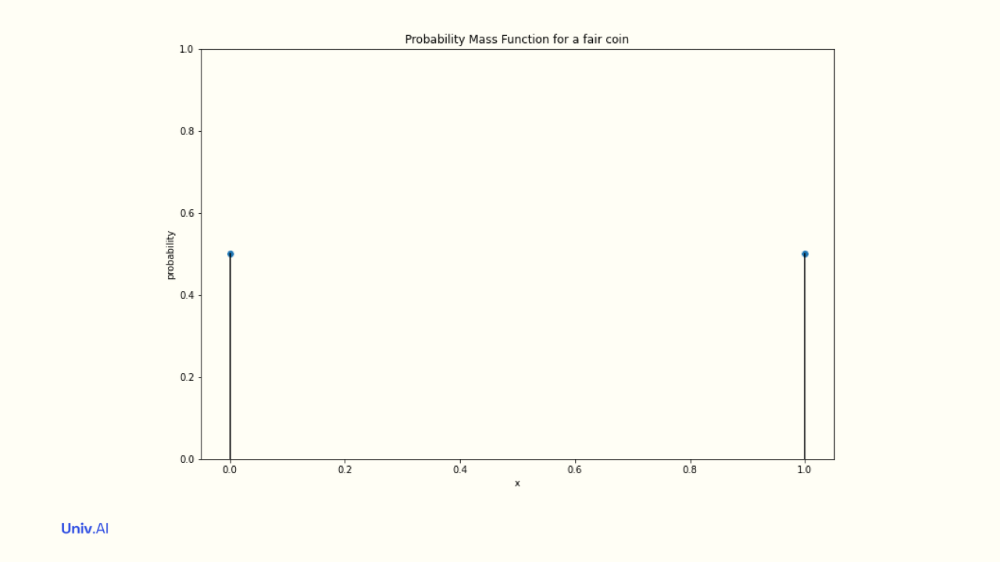
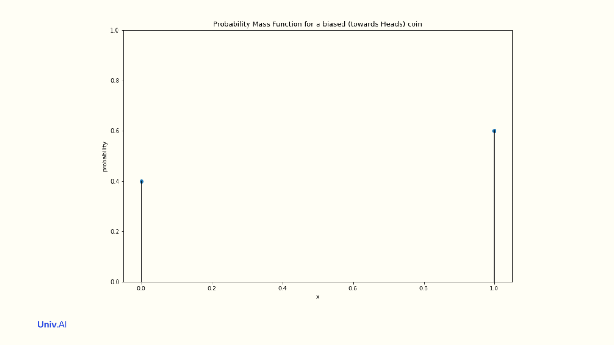
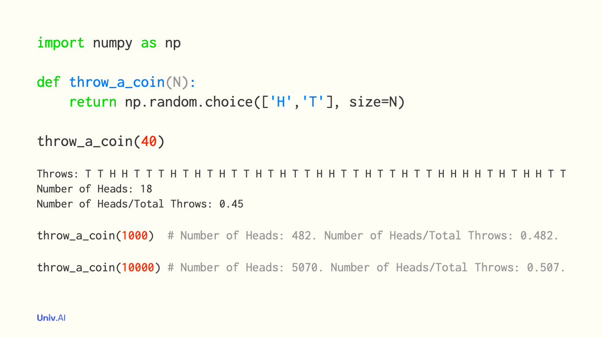
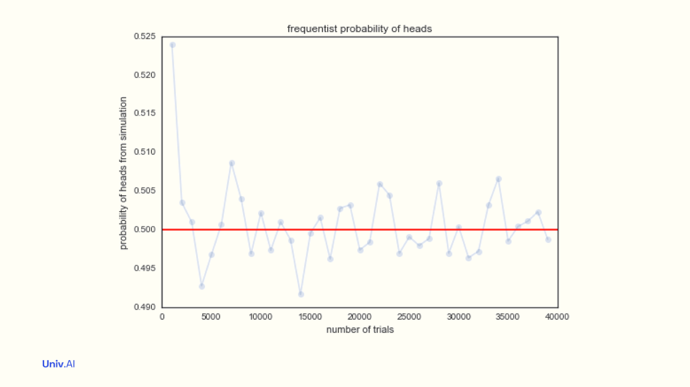
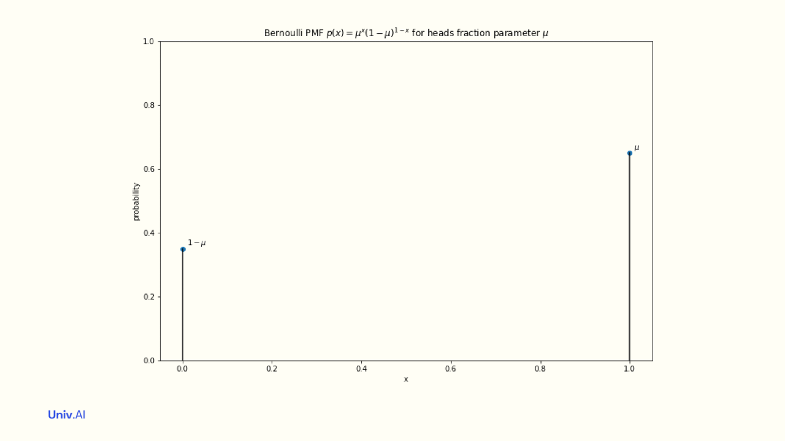

The LLN
Flip enough coins and the truth emerges.
Suppose that you toss a fair coin and catch it to see if you got heads or tails. Then you have this intuition that while you might get a streak of several heads in a row, in the long run the heads and tails are balanced.
This is actually an example of a famous law: the Law of Large numbers (LLN), which states that if you have a random variable X with a mean, the average value of X over a sample of size N converges i.e. gets close and closer to this mean as N becomes larger and larger.

The LLN was first proved by Jakob Bernoulli in Ars Conjectandi, published posthumously by his nephew Niklaus Bernoulli, who appropriated entire passages of it for his treatise on law. It is the basis of much of modern statistics, including the Monte-Carlo method.
Lets parse the law. A random variable is one that can take multiple values, each with some probability. So if X represents the flip of a coin, it will take values Heads and Tails with some probability. We’ll assign Heads the value 1 and Tails the value 0.
The probabilities attatched to the values a random variable takes is called a distribution, or probability mass function (pmf). For a fair coin, the “Bernoulli” Distribution attaches the probabilities 0.5 to value 1 and 0.5 to value 0. These probabilities must add to 1.

- An unfair coin thats more likely to land on heads might have a distribution where 0 has attached probability 0.4 and 1 has attached probability 0.6. In this case the mean µ of the distribution is 0.4 x 0 + 0.6 x 1 = 0.6.

This mean does not need to be one of the allowed values of the distribution (here 0 and 1). The mean here simply indicates whats more likely: 0.6 means that heads is more likely than tails. What is the mean in the case of the fair coin?
Now let us simulate the case of the fair coin. We’ll toss a sample of N coins, or 1 coin N times, using the magic of numpy. We’ll find the average of these N tosses. This is the fraction of heads! We’ll plot this sample average against the sample size N.

- We find that these sample averages are quite close to 0.5. And, as we increase the sample size N, these sample averages become super close to 0.5. Indeed, as N becomes infinite, the sample averages approach the mean µ=0.5. This is the Law of Large Numbers.

The LLN can be tautologically used to define the probability of a fair coin showing heads as the asymptotic (infinite N) sampling average. This is the frequentist definition of “sampling probability”, the population frequency µ.
But we might also treat the mean µ as an intrinsic fraction of heads, a “parameter” of the Bernoulli distribution. Where does it come from in the first place? The value µ can be thought of as an “inferential probability” derived from symmetry and lack of knowledge.

- If you have a coin (2 sides, 2 possibilities), and no additional information about the coin and toss physics (thus fair), you would guess fraction µ=0.5 for heads. The LLN then says that sampling probabilities converge to this “inferential probability”.
wh